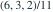
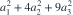
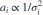

三台仪器独立测量同一常数 ，测量值分别为 ，都无偏，标准差分别为 1、2、3。在 中，最小方差无偏估计的权重是哪项？
- A
- B

- C
- D
我已思考，展开答案与解析
正确答案：C
- 无偏性要求 ；独立性给出方差

。 - 用拉格朗日乘子法可得权重与方差的倒数成正比，即

。 - 将 归一化，得到 ，最小方差为 。
易错提醒最优权重与方差倒数成正比，不是与标准差倒数成正比。
南审 813 · 2026 · 二·1，PDF第1页
从大题拆分考点并重新编写选项；数值或设问有调整。
查看参考来源